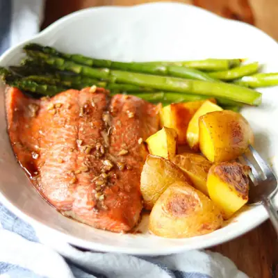

Sheet Pan Salmon and Asparagus with Potatoes

Ingredients
- 1 1/2 pounds baby yukon or gold potatoes, scrubbed clean and quartered
- 2 tablespoons olive oil, divided
- 1 teaspoon garlic powder
- 1 teaspoon onion powder
- 3 (4-6 oz.) salmon fillets
- 1 pound asparagus, ends trimmed
- 3 tablesoons low-sodium soy sauce
- 2 tablespoons honey or maple syrup
- 1 tablespoon sesame oil
- 1 tablespoon rice vinegar
- 1 teaspoon freshly grated ginger
- 1-2 teaspoons minced garlic
Steps
- Preheat your oven to 400°F (200°C). On a large baking sheet, toss the gold potatoes with a tablespoon of olive oil and season with garlic powder and onion powder (or your favorite seasonings). Spread them out in a single layer. Bake for 15 minutes, until they start to soften and develop golden edges.
- Meanwhile, in a small bowl, whisk together all the sauce ingredients until well combined and set aside.
- Remove the baking sheet from the oven. Push the potatoes to one side and place the salmon fillets in the center of the sheet. Arrange the asparagus on the other side. Drizzle half of the sauce over the salmon and lightly toss the asparagus with a drizzle of olive oil. Season the asparagus with salt and pepper.
- Return the baking sheet to the oven and bake for another 12-15 minutes, until the salmon is cooked through and flakes easily with a fork, and the asparagus is tender-crisp.
- Remove the baking sheet from the oven and plate the salmon, asparagus, and potatoes, spooning remaining sauce over the salmon, if desired.
Recipe by Min Kwon · Kidfriendly Meals, from MJ and Hungryman. Saved here for personal use; the original has the full notes, tips and photos. Open original